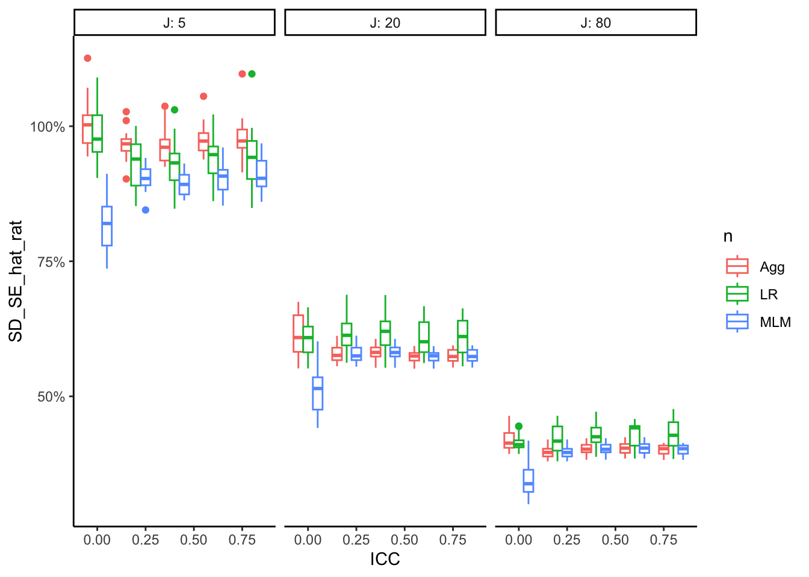

Chapter 9 Designing the multifactor simulation experiment
So far, we’ve created code that will give us results for a single combination of parameter values. In practice, simulation studies typically examine a range of different values, including varying the level of the true parameter values and perhaps also varying sample sizes, to explore a range of different scenarios. We either want reassurance that our findings are general, or we want to understand what aspects of the context lead to our found results. A single simulation gives us no hint as to either of these questions. It is only by looking across a range of settings that we can fully understand trade-offs, general rules, and limits. Let’s now look at the remaining piece of the simulation puzzle: the study’s experimental design.
Simulation studies often take the form of full factorial designed experiments. In full factorials, each factor (a particular knob a researcher might turn to change the simulation conditions) is varied across multiple levels, and the design includes every possible combination of the levels of every factor. One way to represent such a design is as a list of factors and levels.
For example, for the Cronbach alpha simulation, we might want to vary:
- the sample size, with values of 50 or 100; and
- the number of items, with values of 4 or 8.
- the true value of alpha, with values ranging from 0.1 to 0.9;
- the degrees of freedom of the multivariate \(t\) distribution, with values of 5, 10, 20, or 100;
We first express the simulation parameters as a list of factors, each factor having a list of values to explore.
We will then run a simulation for every possible combination of these values.
We call this a \(2 \times 2 \times 9 \times 4\) factorial design, where each element is the number of options for that factor.
Here is code that generates all the scenarios we will run given the above design, storing these combinations in a data frame, params, that represents the full experimental design:
design_factors <- list(
n = c(50, 100),
p = c(4, 8),
alpha = seq(0.1, 0.9, 0.1),
df = c(5, 10, 20, 100)
)
params <- cross_df(design_factors)
params## # A tibble: 144 × 4
## n p alpha df
## <dbl> <dbl> <dbl> <dbl>
## 1 50 4 0.1 5
## 2 100 4 0.1 5
## 3 50 8 0.1 5
## 4 100 8 0.1 5
## 5 50 4 0.2 5
## 6 100 4 0.2 5
## 7 50 8 0.2 5
## 8 100 8 0.2 5
## 9 50 4 0.3 5
## 10 100 4 0.3 5
## # … with 134 more rowsWe have a total of \(2 \times 2 \times 9 \times 4 = 144\) cells, each cell corresponding to a simulation scenario to explore.
9.1 Choosing parameter combinations
How do we go about choosing parameter values to examine? Choosing which parameters to use is a central part of good simulation design because the primary limitation of simulation studies is always their generalizability. On the one hand, it’s difficult to extrapolate findings from a simulation study beyond the set of simulation conditions that were examined. On the other hand, it’s often difficult or impossible to examine the full space of all possible parameter values, except for very simple problems. Even in the Cronbach alpha simulation, we’ve got four factors, and the last three could each take an infinite number of different levels, in theory. How can we come up with a defensible set of levels to examine?
The choice of simulation conditions needs to be made in the context of the problem or model that you’re studying, so it’s a bit difficult to offer valid, decontextualized advice. We can provide a few observations all the same:
For research simulations, it often is important to be able to relate your findings to previous research. This suggests that you should select parameter levels to make this possible, such as by looking at sample sizes similar to those examined in previous studies. That said, previous simulation studies are not always perfect (actually, there’s a lot of really crummy ones out there!), and so prior work should not geneally be your sole guide or justification.
Generally, it is better to err on the side of being more comprehensive. You learn more by looking at a broader range of conditions, and you can always boil down your results to a more limited set of conditions for purposes of presentation.
It is also important to explore breakdown points (e.g., what sample size is too small for a method to work?) rather than focusing only on conditions where a method might be expected to work well. Pushing the boundaries and identifying conditions where estimation methods break will help you to provide better guidance for how the methods should be used in practice.
An important point regarding (2) is that you can be more comprehensive and then have fewer replications per scenario. For example, say you were planning on doing 1000 simulations per scenario, but then you realize there is some new factor that you don’t think matters, but that you believe other researchers will worry about. You could add in that factor, say with four levels, and then do 250 simulations per scenario. The total work remains the same.
When analyzing the final simulation you can then first verify you do not see trends along this new factor, and then marganalize out the factor in your summaries of results. Marginalizing out a factor (i.e., averaging your performance metrics across the additional factor) is a powerful technique of making a claim about how your methods work on average across a range of scenarios, rather than for a specific scenario.
Overall, you generally want to vary parameters that you believe matter, or that you think other people will believe matter. The first is so you can learn. The second is to build your case.
Once you have identified your parameters you then have to decide on the levels of the parameter you will include in the simulation. There are three strategies you might take:
- Vary a parameter over its entire range (or nearly so).
- Choose parameter levels to represent realistic practical range.
- Empirical justification based on systematic reviews of applications
- Or at least informal impressions of what’s realistic in practice
- Choose parameters to emulate one important application.
In the above (1) is the most general—but also the most computationally intensive. (2) will focus attention, ideally, on what is of practical relevance to a practitioner. (3) is usually coupled with a subsequent applied data analysis, and in this case the simulation is often used to enrich that analysis. For example, if the simulation shows the methods work for data with the given form of the target application, people may be more willing to believe the application’s findings.
Regardless of how you select your primary parameters, you should also vary nuisance parameters (at least a little) to test sensitivity of results. While simulations will (generally) never be fully generalizable, you can certainly make them so they avoid the obvious things a critic might identify as an easy dismissal of your findings.
To recap, as you think about your parameter selection, always keep the following design principles and acknowledgements:
- The primary limitation of simulation studies is generalizability.
- Choose conditions that allow you to relate findings to previous work.
- Err towards being comprehensive.
- The goal should be to build an understanding of the major moving parts.
- Presentation of results can always be tailored to illustrate trends.
- Explore breakdown points (e.g., what sample size is too small for applying a given method?).
And fully expect to add and subtract from your set of parameters as you get your initial simulation results! No one ever runs just a single simulation.
9.2 Example: The Clustered RCT
Choosing parameters is the heart of the multifactor experiment. Extending our case study presented in Section (case_cluster?) to a multifactor simulation, let’s think about how to design our full experiment.
So far, we have only investigated a single scenario at a time, although our modular approach does make exploring a range of scenarios by re-calling our simulation function relatively straightforward. But how do our findings generalize? When are the different methods differently appropriate? To answer this, we need to extend to a multifactor simulation to systematically explore trends across contexts for our three estimators. We begin by identifying some questions we might have, given our preliminary results.
Regarding bias, in our initial simulation, we noticed that Linear Regression is estimating a person-weighted quantity, and so would be considered biased for the site-average ATE. We might next ask, how much does bias change if we change the site-size by impact relationship?
For precision, we also saw that Linear Regression has a higher standard error. But is this a general finding? When does this occur? Are there contexts where linear regression will do better than the others? Originally we thought aggregation would lose information becuase little sites will have the same weight as big sites, but be more imprecisely estimated. Were we wrong? Or perhaps if site size was even more variable, Agg might do worse and worse.
Finally, the estimated SEs all appeared to be good, although they were rather variable, relative to the true SE. We might then ask, is this always the case? Will the estimated SEs fall apart (e.g., be way too large or way too small, in general) in different contexts?
To answer these questions we need to more systematically explore the space of models. But we have a lot of knobs to turn. In our simulation, we can generate fake cluster randomized data with the following features:
The treatment impact of the site can vary, and vary with the site size
We can have sites of different sizes if we want
We can also vary:
- the site intercept variance
- the residual variance,
- the treatment impact
- the site size
- the number of sites, …
We cannot easily vary all of these. We instead reflect on our research questions, speculate as to what is likely to matter, and then consider varying the following:
- Average site size: Does the number of students/site matter?
- Number of sites: Do cluster-robust SEs work with fewer sites?
- Variation in site size: Varying site sizes cause bias or break things?
- Correlation of site size and site impact: Will correlation cause bias?
- Cross site variation: Does the amount of site variation matter?
When designing the final factors, it is important to ensure those factors are isolated, in that changing one of them is not changing a host of other things that might impact performance. For example, in our case, if we simply added more cross site variation by directly increasing the random effects for the clusters, our total variation will increase. If we see that methods deteriorate, we then have a confound: is it the cross site variation causing the problem, or is it the total variation? We therefore want to vary site variation while controlling total variation; this is why we use the ICC knob discussed in the section on the data generation process.
9.3 Using pmap to run multifactor simulations
To run simulations across all of our factor combinations, we are going to use a very useful method in the purrr package called pmap().
pmap() marches down a set of lists, running a function on each \(p\)-tuple of elements, taking the \(i^{th}\) element from each list for iteration \(i\), and passing them as parameters to the specified function.
pmap() then returns the results of this sequence of function calls as a list of results.
Here is a small illustration:
my_function <- function( a, b, theta, scale ) {
scale * (a + theta*(b-a))
}
args = list( a = 1:3,
b = 5:7,
theta = c(0.2, 0.3, 0.7) )
purrr::pmap_dbl( args, my_function, scale = 10 )## [1] 18 32 58One important note is the variable names for the lists being iterated over must correspond exactly to function arguments of the called function.
Extra parameters can be passed after the function name; these will be held constant, and passed to each function call.
See how scale is the same for all calls.
As we see above, pmap() has variants such as _dbl or _df just like the map() and map2() methods.
These variants will automatically stack or convert the list of things returned into a tidier collection (for _dbl it will convert to a vector of numbers, for _df it will stack the results to make a large dataframe, assuming each thing returned is a little dataframe).
So far, this is great, but it does not quite look like what we want: our factors are stored as a dataframe, not three lists.
This is where R gets interesting: in R, the columns of a dataframe are stored as a list of vectors or lists (with each of the vectors or lists having the exact same length).
This works beautifully with pmap().
Witness:
args[[2]]## [1] 5 6 7a_df = as.data.frame(args)
a_df## a b theta
## 1 1 5 0.2
## 2 2 6 0.3
## 3 3 7 0.7a_df[[2]]## [1] 5 6 7purrr::pmap_dbl( a_df, my_function, scale = 10)## [1] 18 32 58We can pass a_df to pmap, and pmap takes it as a list of lists, and therefore does exactly what it did before.
All of this means pmap() can run a specified function on each row of a dataset.
Continuing the Cronbach Alpha simulation from above, we would have the following:
We add a column to params to record the desired 500 replications per condition.
The above code calls our run_alpha_sim() method for each row of our list of scenarios we want to explore.
Even better, we are storing the results as a new variable in the same dataset.
sim_results## # A tibble: 144 × 6
## n p alpha df iterations res
## <dbl> <dbl> <dbl> <dbl> <dbl> <list>
## 1 50 4 0.1 5 500 <df [4 × 3]>
## 2 100 4 0.1 5 500 <df [4 × 3]>
## 3 50 8 0.1 5 500 <df [4 × 3]>
## 4 100 8 0.1 5 500 <df [4 × 3]>
## 5 50 4 0.2 5 500 <df [4 × 3]>
## 6 100 4 0.2 5 500 <df [4 × 3]>
## 7 50 8 0.2 5 500 <df [4 × 3]>
## 8 100 8 0.2 5 500 <df [4 × 3]>
## 9 50 4 0.3 5 500 <df [4 × 3]>
## 10 100 4 0.3 5 500 <df [4 × 3]>
## # … with 134 more rowsWe are creating a list-column, where each element in our list column is the little summary of our simulation results for that scenario. Here is the third scenario, for example:
sim_results$res[[3]]## criterion est MCSE
## 1 alpha bias -0.07810538 0.015587246
## 2 alpha RMSE 0.35684535 0.002040271
## 3 V relative bias 0.40563277 0.004957216
## 4 coverage 0.83000000 0.009746794We finally use unnest() to expand the res variable, replicating the values of the main variables once for each row in the nested dataset:
library(tidyr)
sim_results <- unnest(sim_results, cols = res) %>%
dplyr::select( -iterations )
sim_results## # A tibble: 576 × 7
## n p alpha df criterion est MCSE
## <dbl> <dbl> <dbl> <dbl> <chr> <dbl> <dbl>
## 1 50 4 0.1 5 alpha bias -0.0671 0.0135
## 2 50 4 0.1 5 alpha RMSE 0.309 0.000536
## 3 50 4 0.1 5 V relative bias 0.601 0.00172
## 4 50 4 0.1 5 coverage 0.854 0.00975
## 5 100 4 0.1 5 alpha bias -0.0469 0.0105
## 6 100 4 0.1 5 alpha RMSE 0.239 0.000480
## 7 100 4 0.1 5 V relative bias 0.462 0.00165
## 8 100 4 0.1 5 coverage 0.804 0.00975
## 9 50 8 0.1 5 alpha bias -0.0781 0.0156
## 10 50 8 0.1 5 alpha RMSE 0.357 0.00204
## # … with 566 more rowsWe can put all of this together in a a tidy workflow as follows:
sim_results <-
params %>%
mutate(res = pmap(., .f = run_alpha_sim)) %>%
unnest(cols = res)If we wanted to use parallel processing (more on this later) we can also simply use the simhelpers package (the following code is auto-generated by the create_skeleton() method as well):
plan(multisession) # choose an appropriate plan from the future package
evaluate_by_row(params, run_alpha_sim)We save using the tidyverse writing command; see “R for Data Science”
textbook, 11.5.
We can ensure we have a directory by making one via dir.create() (see Section (saving_files?) for more on files):
dir.create("results", showWarnings = FALSE )
write_csv( res, "results/simulation_CRT.csv" )9.4 How to repeat oneself
We have three core elements in our simulation: - Generate data - Analyze data - Assess performance
In arranging these elements, we have a choice: do we compute performance measures for each simulation scenario as we go (inside) vs. computing after we get all of our individual results (outside)?
INSIDE (aggregate as you simulate): In this approach, we, for each scenario defined by a specific combination of factors, run our simulation for that scenario, assess the performance, and then return a nice summary table of how well our methods did. This is the most straightforward, given what we have done so far: we have a method to run a simulation for a scenario, and we simply run that method for a bunch of scenarios and collate.
After the pmap() call, we would end up with a dataframe with all our simulations, one simulation context per row (or maybe bundles, one for each method), with
our measured performance outcomes. This is ideally all we need to analyze.
We have less data to store, and it is easier to compartmentalize. On the cons side, we have no ability to add new performance measures on the fly.
This seems pretty good. That being said, sometimes we might want to use a lot of disk space and keep much more. In particular, each row of the above corresponds to the summary of a whole collection of individual runs. We might instead store all of these runs, which brings us to the other approach.
OUTSIDE (keep all simulation runs): In this approach we do not aggregate, but instead, for each scenario, return the entire set of individual estimates. The benefit of this is, given the raw estimates, you can dynamically add or change how you calculate performance measures. You do, however, end up with massive amounts of data to store and manipulate.
To move from inside to outside, we just take the summarizing step out of run_alpha_sim().
E.g.,:
run_alpha_sim_raw <- function(iterations, n, p, alpha, df, coverage = 0.95, seed = NULL) {
if (!is.null(seed)) set.seed(seed)
results <-
replicate(n = iterations, {
dat <- r_mvt_items(n = n, p = p, alpha = alpha, df = df)
estimate_alpha(dat, coverage = coverage)
}, simplify = FALSE) %>%
bind_rows()
results
}Each call to run_alpha_sim_raw() now gives one row per simulation trial.
We replicate our simulation parameters for each row.
run_alpha_sim_raw( 4, 50, 6, 0.5, 3 )## A Var_A CI_L CI_U
## 1 0.5576305 0.009393158 0.32036756 0.7120638
## 2 0.6831500 0.004818908 0.51320891 0.7937639
## 3 0.4041050 0.017044363 0.08449929 0.6121348
## 4 0.6075081 0.007394395 0.39699678 0.7445289The primary advantage of this is we can then generate new performance measures, as they occur to us, later on. The disadvantage is this result file will be \(R\) times as many rows as the older file, which can get quite, quite large.
But disk space is cheap!
Here we run the same experiment with our more
complete storage. Note how the pmap_df stacks the
multiple rows from each run, giving us everything nicely bundled up:
params$res <- params %>%
pmap( run_alpha_sim_raw, iterations = 500 )
sim_results_full <- unnest( params,
cols = res ) We end up with a lot more rows:
nrow( sim_results_full )## [1] 72000nrow( sim_results )## [1] 576We next save our results:
saveRDS( sim_results_full, "results/cronbach_results_full.rds" )Compare the file sizes: one is several k, the other is around 20 megabytes.
file.size("results/cronbach_results.rds") / 1024## [1] 8.286133file.size("results/cronbach_results_full.rds") / 1024## [1] 2114.2169.4.1 Getting raw results ready for analysis
If we generated raw results then we need to collapse them by experimental run
before calculating performance measures so we can explore the trends across the
experiments.
We do this by grouping our data and calling alpha_performance() for each group:
results <- sim_results_full %>%
nest_by( n, p, alpha, df, .key = "alpha_sims" )
results## # A tibble: 144 × 5
## # Rowwise: n, p, alpha, df
## n p alpha df alpha_sims
## <dbl> <dbl> <dbl> <dbl> <list<tibble[,4]>>
## 1 50 4 0.1 5 [500 × 4]
## 2 50 4 0.1 10 [500 × 4]
## 3 50 4 0.1 20 [500 × 4]
## 4 50 4 0.1 100 [500 × 4]
## 5 50 4 0.2 5 [500 × 4]
## 6 50 4 0.2 10 [500 × 4]
## 7 50 4 0.2 20 [500 × 4]
## 8 50 4 0.2 100 [500 × 4]
## 9 50 4 0.3 5 [500 × 4]
## 10 50 4 0.3 10 [500 × 4]
## # … with 134 more rowsresults$performance = map2( results$alpha_sims,
results$alpha, alpha_performance )
results <- results %>%
dplyr::select( -alpha_sims ) %>%
unnest( cols="performance" )
results## # A tibble: 576 × 7
## # Groups: n, p, alpha, df [144]
## n p alpha df criterion est MCSE
## <dbl> <dbl> <dbl> <dbl> <chr> <dbl> <dbl>
## 1 50 4 0.1 5 alpha bias -0.0798 0.0143
## 2 50 4 0.1 5 alpha RMSE 0.328 0.000661
## 3 50 4 0.1 5 V relative bias 0.557 0.00186
## 4 50 4 0.1 5 coverage 0.82 0.00975
## 5 50 4 0.1 10 alpha bias -0.0384 0.0124
## 6 50 4 0.1 10 alpha RMSE 0.280 0.000700
## 7 50 4 0.1 10 V relative bias 0.661 0.00281
## 8 50 4 0.1 10 coverage 0.892 0.00975
## 9 50 4 0.1 20 alpha bias -0.0390 0.0101
## 10 50 4 0.1 20 alpha RMSE 0.229 0.000348
## # … with 566 more rows# NOTE: This is HORRIBLE. There has to be a better way.Now, if we want to add a performance metric, we can simply change alpha_performance and recalculate, without running the time-intensive simulations.
Being able to re-analyze your results is generally a far easier fix than running all the simulations again
after changing the run_alpha_sim() method.
The results of summarizing during the simulation vs. after as we just did leads to essentially the same place, however, although our old results are in long format (with one row per simulation metric vs. the metrics being columns).
9.5 Running the Cluster RCT Multifactor experiment
Running our cluster RCT simulation is the exact same code as we have used before. Simulations take awhile to run so we save them so we can analyze at our leisure. Because we are not exactly sure what performance metrics we want, we will save our individual results, and calculate performance metrics on the full data. I.e., we are storing the individual runs, not the analyzed results!
The code is as follows:
params <-
cross_df(design_factors) %>%
mutate(
reps = 100,
seed = 20200320 + 1:n()
)
params$res = pmap(params, .f = one_CRT_sim )
res = params %>% unnest( cols=c(data) )
saveRDS( res, file = "results/simulation_CRT.rds" )The seed is for reproducibility; we discuss this more later on.
We then group by our simulation factors and calculate all our performance metrics at once directly. For example, here is the code for calculating performance measures across our simulation for the cluster randomized experiments example:
res <- read_csv( file = "results/simulation_CRT.csv" )## Rows: 202500 Columns: 14
## ── Column specification ────────────────────────────────────────────────────────
## Delimiter: ","
## chr (1): method
## dbl (13): n_bar, J, ATE, size_coef, ICC, alpha, reps, seed, runID, ATE_hat, ...
##
## ℹ Use `spec()` to retrieve the full column specification for this data.
## ℹ Specify the column types or set `show_col_types = FALSE` to quiet this message.sres <-
res %>%
group_by( n_bar, J, ATE, size_coef, ICC, alpha, method ) %>%
summarise(
bias = mean(ATE_hat - ATE),
SE = sd( ATE_hat ),
RMSE = sqrt( mean( (ATE_hat - ATE )^2 ) ),
ESE_hat = sqrt( mean( SE_hat^2 ) ),
SD_SE_hat = sqrt( sd( SE_hat^2 ) ),
power = mean( p_value <= 0.05 ),
R = n(),
.groups = "drop"
)
sres## # A tibble: 810 × 14
## n_bar J ATE size_coef ICC alpha method bias SE RMSE ESE_hat
## <dbl> <dbl> <dbl> <dbl> <dbl> <dbl> <chr> <dbl> <dbl> <dbl> <dbl>
## 1 20 5 0.2 0 0 0 Agg 0.00806 0.200 0.200 0.197
## 2 20 5 0.2 0 0 0 LR 0.00806 0.200 0.200 0.197
## 3 20 5 0.2 0 0 0 MLM 0.00806 0.200 0.200 0.234
## 4 20 5 0.2 0 0 0.5 Agg 0.0265 0.211 0.213 0.217
## 5 20 5 0.2 0 0 0.5 LR 0.0214 0.209 0.210 0.209
## 6 20 5 0.2 0 0 0.5 MLM 0.0234 0.208 0.209 0.244
## 7 20 5 0.2 0 0 0.8 Agg -0.0186 0.239 0.239 0.224
## 8 20 5 0.2 0 0 0.8 LR -0.0114 0.226 0.226 0.200
## 9 20 5 0.2 0 0 0.8 MLM -0.0153 0.227 0.227 0.246
## 10 20 5 0.2 0 0.2 0 Agg -0.00585 0.446 0.445 0.455
## # … with 800 more rows, and 3 more variables: SD_SE_hat <dbl>, power <dbl>,
## # R <int>9.5.1 Making analyze_data() quiet
If we run our simulation when there is little cluster variation, we start getting a lot of messages and warnings from our MLM estimator. For example, from a single call we get:
analyze_data(dat)## # A tibble: 3 × 4
## method ATE_hat SE_hat p_value
## <chr> <dbl> <dbl> <dbl>
## 1 MLM -1.12 0.928 0.396
## 2 LR -1.12 0.494 0.265
## 3 Agg -1.12 0.494 0.265When we scale up to our full simulations, these warnings can become a nuisance.
Furthermore, we have found that the lmer command can sometimes just fail (we believe there is some bug in the optimizer that fails if things are just perfectly wrong).
If this was on simulation run 944 out of 1000, we would lose everything!
To protect ourselves, we trap messages and warnings as so (see Chapter @(#safe_code) for more on this):
quiet_lmer = quietly( lmer )
analyze_data <- function( dat ) {
# MLM
M1 <- quiet_lmer( Yobs ~ 1 + Z + (1|sid), data=dat )
message1 = ifelse( length( M1$message ) > 0, 1, 0 )
warning1 = ifelse( length( M1$warning ) > 0, 1, 0 )
...
# Compile our results
tibble(
method = c( "MLM", "LR", "Agg" ),
ATE_hat = c( est1, est2, est3 ),
SE_hat = c( se1, se2, se3 ),
p_value = c( pv1, pv2, pv3 ),
message = c( message1, 0, 0 ),
warning = c( warning1, 0, 0 )
)
}We now get a note about the message regarding convergence saved in our results:
analyze_data(dat)## # A tibble: 3 × 6
## method ATE_hat SE_hat p_value message warning
## <chr> <dbl> <dbl> <dbl> <dbl> <dbl>
## 1 MLM -1.12 0.928 0.396 0 0
## 2 LR -1.12 0.494 0.265 0 0
## 3 Agg -1.12 0.494 0.265 0 09.6 Analyzing a multifactor experiment
Once we have performance measures for all our simulation scenarios, how do we explore them? For our Cluster RCT simulation, we have 270 different simulation runs across our factors (with three rows per simulation run, one for each method). How can we visualize and understand trends across this complex domain?
There are several techniques for summarizing across the data that one might use.
9.6.1 Bundling
As a first step, we might bundle the simulations by the primary factors of interest. We would then plot these bundles as box plots to see central tendency along with variation. With bundling, we would need a good number of simulation runs per scenario, so that the MCSE in the performance measures does not make our boxplots look substantially more variable than the truth.
For example, as a first step to understanding bias, we might bundle our results by ICC. In this code we are making groups of method by ICC level so we get side-by-side boxplots for each ICC level considered:
res <- readRDS( "results/simulation_CRT.rds" )
ggplot( sres, aes( ICC, bias, col=method, group=paste0(ICC,method) ) ) +
facet_grid( alpha ~ size_coef, labeller = label_both ) +
geom_boxplot(coef = Inf) +
geom_hline( yintercept = 0 ) +
theme_minimal() +
scale_x_continuous( breaks = unique( sres$ICC) )
Each box is a collection of simulation trials. E.g., for ICC = 0.6, size_coef = 0.2, and alpha = 0.8 we have 9 scenarios representing the varying level 1 and level 2 sample sizes:
filter( sres, ICC == 0.6, size_coef == 0.2,
alpha == 0.8, method=="Agg" ) %>%
dplyr::select( n_bar:alpha, bias )## # A tibble: 9 × 7
## n_bar J ATE size_coef ICC alpha bias
## <dbl> <dbl> <dbl> <dbl> <dbl> <dbl> <dbl>
## 1 20 5 0.2 0.2 0.6 0.8 -0.00452
## 2 20 20 0.2 0.2 0.6 0.8 -0.0182
## 3 20 80 0.2 0.2 0.6 0.8 -0.00921
## 4 80 5 0.2 0.2 0.6 0.8 0.119
## 5 80 20 0.2 0.2 0.6 0.8 0.00210
## 6 80 80 0.2 0.2 0.6 0.8 0.00641
## 7 320 5 0.2 0.2 0.6 0.8 -0.00182
## 8 320 20 0.2 0.2 0.6 0.8 -0.00219
## 9 320 80 0.2 0.2 0.6 0.8 0.00632We are seeing a few outliers for some of the boxplots, suggesting that there are other factors driving bias. We could try bundling along different aspects to see:
ggplot( sres, aes( as.factor(n_bar), bias, col=method, group=paste0(n_bar,method) ) ) +
facet_grid( alpha ~ size_coef, labeller = label_both ) +
geom_boxplot(coef = Inf) +
geom_hline( yintercept = 0 ) +
theme_minimal()
No progress there. Perhaps it is instability or MCSE. We make a note to investigate further, later on.
9.6.2 Aggregation
The boxplots are hard for seeing trends. Instead of bundling, we can therefore aggregate, to look at overall trends rather than individual simulation variation. This is especially important if the number of replicates within each scenario is small, because then each scenario’s performance is measured with a lot of error.
With aggregation, we average over some of the factors, collapsing our simulation results down to fewer moving parts. This is better than having not had those factors in the first place! Averaging over a factor is a more general answer than having not varied the factor at all.
For example, if we average across ICC and site variation, and see how the methods change performance as a function of \(J\), we would know that this is a general trend across a range of scenarios defined by different ICC and site variation levels. Our conclusions would then be more general than if we picked a single ICC and amount of site variation: in this latter case we would not know if we would see our trend more broadly.
Also, with aggregation, we can have a smaller number of replications per factor combination. The averaging will, in effect, give a lot more reps per aggregated performance measure.
A caution with aggregation is that it can be deceitful if you have scaling issues or extreme outliers. With bias, our scale is fairly well set, so we are good! But if we were aggregating standard errors over sample size, then the larger standard errors of the smaller sample size simulations (and the greater variability in estimating those standard errors) would swamp the standard errors of the larger sample sizes. Usually, with aggregation, we want to average over something we believe will not change massively over the marginalized-out factors. Alternatively, we can average over a relative measure, which tend to be more invariant and comparable across scenarios.
For our cluster RCT, we might aggregate as follows:
ssres <-
sres %>%
group_by( ICC, method, alpha, size_coef ) %>%
summarise( bias = mean( bias ) )
ggplot( ssres, aes( ICC, bias, col=method ) ) +
facet_grid( alpha ~ size_coef, labeller = label_both ) +
geom_point( alpha=0.75 ) +
geom_line( alpha=0.75 ) +
geom_hline( yintercept = 0 ) +
theme_minimal()
This shows that site variation leads to greater bias, but only if the coefficient for size is nonzero. We also see that all the estimators must be the same if site variation is 0, with the overplotted lines on the top row of the figure.
9.6.3 Regression Summarization
One can treat the simulation results as a dataset in its own right. In this case we can regress a performance measure against the methods and various factor levels to get “main effects” of how the different levels impact performance holding the other levels constant. The main effect of the method will tell us if a method is, on average, higher or lower than the baseline method. The main effect of the factors will tell us if that factor impacts the performance measure.
These regressions can also include interactions between method and factor, to see if some factors impact different methods differently. They can also include interactions between factors, which allows us to explore how the impact of a factor can matter more or less, depending on other aspects of the context.
For our cluster RCT, we might have, for example:
sres_f = sres %>%
mutate( across( c( n_bar, J, size_coef, ICC, alpha ), factor ) )
M <- lm( bias ~ (n_bar + J + size_coef + ICC + alpha) * method,
data = sres_f )
stargazer::stargazer(M, type = "text",
single.row = TRUE )##
## ==================================================
## Dependent variable:
## ---------------------------
## bias
## --------------------------------------------------
## n_bar80 0.002 (0.004)
## n_bar320 -0.005 (0.004)
## J20 -0.005 (0.004)
## J80 0.001 (0.004)
## size_coef0.2 0.001 (0.003)
## ICC0.2 0.003 (0.005)
## ICC0.4 0.00003 (0.005)
## ICC0.6 -0.003 (0.005)
## ICC0.8 -0.004 (0.005)
## alpha0.5 0.010** (0.004)
## alpha0.8 0.006 (0.004)
## methodLR -0.013* (0.008)
## methodMLM 0.002 (0.008)
## n_bar80:methodLR -0.001 (0.005)
## n_bar320:methodLR -0.001 (0.005)
## n_bar80:methodMLM -0.0004 (0.005)
## n_bar320:methodMLM -0.001 (0.005)
## J20:methodLR 0.005 (0.005)
## J80:methodLR 0.004 (0.005)
## J20:methodMLM 0.001 (0.005)
## J80:methodMLM 0.001 (0.005)
## size_coef0.2:methodLR 0.018*** (0.004)
## size_coef0.2:methodMLM 0.003 (0.004)
## ICC0.2:methodLR 0.001 (0.007)
## ICC0.4:methodLR 0.001 (0.007)
## ICC0.6:methodLR 0.001 (0.007)
## ICC0.8:methodLR 0.003 (0.007)
## ICC0.2:methodMLM -0.005 (0.007)
## ICC0.4:methodMLM -0.005 (0.007)
## ICC0.6:methodMLM -0.006 (0.007)
## ICC0.8:methodMLM -0.006 (0.007)
## alpha0.5:methodLR 0.008 (0.005)
## alpha0.8:methodLR 0.020*** (0.005)
## alpha0.5:methodMLM 0.001 (0.005)
## alpha0.8:methodMLM 0.003 (0.005)
## Constant -0.003 (0.005)
## --------------------------------------------------
## Observations 810
## R2 0.165
## Adjusted R2 0.127
## Residual Std. Error 0.026 (df = 774)
## F Statistic 4.367*** (df = 35; 774)
## ==================================================
## Note: *p<0.1; **p<0.05; ***p<0.01We can quickly get a lot of features, and this approach can be hard to interpret. But picking out the significant coefficents does provide a lot of clues, rather rapidly. E.g., many features interact with the LR method for bias. The other methods seem less impacted.
9.6.4 Focus on subset, kick rest to supplement
Frequently researchers might simply filter the simulation results to a single factor level for some nuisance parameter. For example, we might examine ICC of 0.20 only, as this is a “reasonable” value given substance matter knowledge. We would then consider the other levels as a “sensitivity” analysis vaguely alluded to in our main report and placed elsewhere, such as an online supplemental appendix.
It would be our job, in this case, to verify that our reported findings on the main results indeed were echoed in our other, set-aside, simulation runs.
9.7 Analyzing results when some trials have failed
If methods fail, then this is something to investigate in its own right. Ideally, failure is not too common, so we can drop those trials, or keep them, without really impacting our overall results. But one should at least know what one is ignoring.
For example, in our cluster RCT, we know we have, at least sometimes, convergence issues. We know that ICC is an important feature, so we can explore how often we get a convergence message by ICC level:
res %>%
group_by( method, ICC ) %>%
summarise( message = mean( message ) ) %>%
pivot_wider( names_from = "method", values_from="message" )## # A tibble: 5 × 4
## ICC Agg LR MLM
## <dbl> <dbl> <dbl> <dbl>
## 1 0 0 0 0.499
## 2 0.2 0 0 0.0139
## 3 0.4 0 0 0.00311
## 4 0.6 0 0 0.00104
## 5 0.8 0 0 0.000444We see that when the ICC is 0 we get a lot of convergence issues, but as soon as we pull away from 0 it drops off considerably. At this point we might decide to drop those runs with a message or keep them. In this case, we decide to keep. It shouldn’t matter much in any case except the ICC = 0 case, and we know the convergence is due to trying to estimate a 0 variance, and thus is in some sense expected. Furthermore, we know people using these methods would likely ignore these messages, and thus we are faithfully capturing how these methods would be used in practice. We might eventually, however, want to do a separate analysis of the ICC = 0 context to see if the MLM approach actually falls apart, or if it is just throwing error messages.